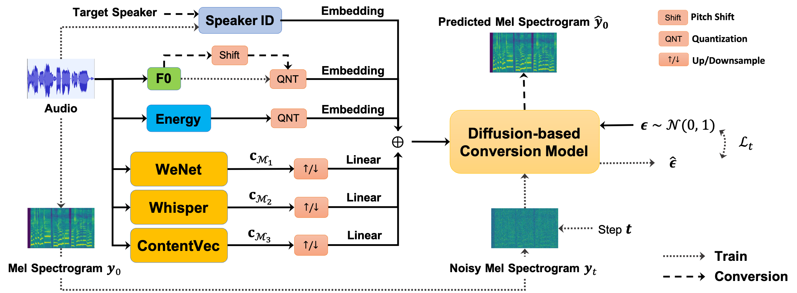

Leveraging Content-based Features from Multiple Acoustic Models for Singing Voice Conversion
| Preprint | Code | Pretrained Model | Huggingface Space | OpenXLab App |
Xueyao Zhang, Yicheng Gu, Haopeng Chen, Zihao Fang, Lexiao Zou, Liumeng Xue, Zhizheng Wu
School of Data Science, The Chinese University of Hong Kong, Shenzhen
Overview
Singing voice conversion (SVC) is a technique to enable an arbitrary singer to sing an arbitrary song. To achieve that, it is important to obtain speaker-agnostic representations from source audio, which is a challenging task. A common solution is to extract content-based features (e.g., PPGs) from a pretrained acoustic model. However, the choices for acoustic models are vast and varied. It is yet to be explored what characteristics of content features from different acoustic models are, and whether integrating multiple content features can help each other. This study investigates three distinct content features, sourcing from WeNet, Whisper, and ContentVec, respectively. We explore their complementary roles in intelligibility, prosody, and conversion similarity for SVC. By integrating the multiple content features with a diffusion-based SVC model, our SVC system achieves superior conversion performance on both objective and subjective evaluation in comparison to a single source of content features.

The proposed diffusion-based SVC framework that leverages multiple content
features
Contents
- Part 1: Complementary Roles of Multiple Content Features
- Part 2: Performance of Our Proposed SVC System
- Part 3: Improvements of Fine-tuning Vocoder with Singing Voice Data
AI Singers Demo
The vocal audios are produced by our proposed SVC system.